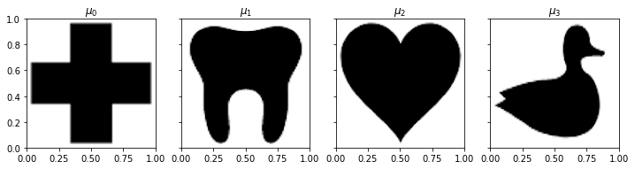

Shape Interpolation#
[6]:
from mmot import MMOTSolver
import numpy as np
import matplotlib.pyplot as plt
import itertools
[7]:
measures = [None]*4
measures[0] = 1 - plt.imread('images/redcross.png')[:, :, 2]
measures[1] = 1 - plt.imread('images/tooth.png')[:, :, 2]
measures[2] = 1 - plt.imread('images/heart.png')[:, :, 2]
measures[3] = 1 - plt.imread('images/duck.png')[:, :, 2]
pad = 4
for i in range(len(measures)):
temp= measures[i]*np.prod(measures[i].shape)/np.sum(measures[i])
measures[i] = np.zeros((measures[i].shape[0]+2*pad,measures[i].shape[1]+2*pad))
measures[i][pad:-pad,pad:-pad] = temp
[8]:
# Grid of size n1 x n2
n1,n2 = measures[0].shape
x, y = np.meshgrid(np.linspace(0.5/n1,1-0.5/n1,n1), np.linspace(0.5/n2,1-0.5/n1,n2))
# Normalize all the measures
for i in range(len(measures)):
measures[i] *= n1*n2 / np.sum(measures[i])
fig, ax = plt.subplots(1, len(measures), figsize=(12,4),sharey=True)
for i in range(len(measures)):
ax[i].imshow(measures[i], extent=(0,1,0,1), cmap='Greys')
ax[i].set_title("$\\mu_{{ {:0d} }}$".format(i))

[9]:
def Solve(bary_weights):
unroll_node = 1
bary_weights /= np.sum(bary_weights)
# Only keep the measures with positive weights
keep_inds = np.where(bary_weights>0)[0]
bary_weights = bary_weights[keep_inds]
if(len(keep_inds)==1):
return measures[keep_inds[0]]
keep_measures = [measures[i] for i in keep_inds]
# Construct the edge list for the barycenter problem
edge_list = []
for i in range(len(keep_inds)):
for j in range(i+1,len(keep_inds)):
edge_list.append([i,j])
# Set up the MMOT solver
prob = MMOTSolver(keep_measures, edge_list, x, y, unroll_node, bary_weights)
dual_vars = [np.zeros(x.shape) for i in range(prob.NumDual())]
num_its = 1000
step_size = 0.2
costs = np.nan*np.zeros(num_its)
ftol = 0.0
gtol = 1e-6
root_nodes = np.arange(prob.NumDual())
root_cycler = itertools.cycle(root_nodes)
old_cost = prob.ComputeCost(dual_vars)
alpha = 1.0/1.5
print('Iteration, StepSize, Cost, Error, Line Its')
for i in range(num_its):
alpha = np.minimum(1.5*alpha,1.0)
#alpha = 1.0
line_it = 0
max_line_its = 20
while(line_it<max_line_its):
new_duals = np.copy(dual_vars)
newSqNorm = prob.Step(next(root_cycler), new_duals, alpha*step_size)
if(line_it==0):
gradSqNorm = newSqNorm
new_cost = prob.ComputeCost(new_duals)
if(new_cost>=old_cost+1e-4*step_size*alpha*gradSqNorm):
costs[i] = new_cost
old_cost = np.copy(new_cost)
dual_vars = np.copy(new_duals)
break
else:
alpha *=0.5
line_it += 1
if(line_it>=max_line_its):
print('{:9d}, {:0.4f}, {:0.4e}, {:0.4e}, {:8d}'.format(i,step_size, costs[i-1], gradSqNorm, line_it))
print('Terminating due to failed line search.')
break
#if(i>0):
# step_size = prob.StepSizeUpdate(step_size, costs[i], costs[i-1], error)
if((i%10)==0):
print('{:9d}, {:0.4f}, {:0.4e}, {:0.4e}, {:8d}'.format(i,step_size, costs[i], gradSqNorm, line_it))
# Check for convergence in cost
if(np.abs(costs[i]-costs[i-1])<ftol):
print('{:9d}, {:0.4f}, {:0.4e}, {:0.4e}, {:8d}'.format(i,step_size, costs[i], gradSqNorm, line_it))
print('Terminating due to small change in objective.')
break
# Check for convergence via gradient
if(gradSqNorm<gtol):
print('{:9d}, {:0.4f}, {:0.4e}, {:0.4e}, {:8d}'.format(i,step_size, costs[i], gradSqNorm, line_it))
print('Terminating due to small gradient norm.')
break
return prob.Barycenter(dual_vars)
[10]:
fig=plt.figure(figsize=(8,8))
vmax = np.max(measures[0])
size=0.26
corner_pos = np.array([[0.0,1.0], [0.0,0.0], [1.0,1.0], [1.0,0.0]])
for i,m in enumerate(measures):
ax=fig.add_axes([corner_pos[i,0],corner_pos[i,1],size,size])
ax.imshow(measures[i],extent=(0,1,0,1),cmap='Greys',vmin=0, vmax=vmax)
ax.set_axis_off()
for w1 in np.linspace(0,1,5):
for w2 in np.linspace(0,1,5):
weights = [(1.0-w1)*w2, (1.0-w1)*(1.0-w2), w1*w2, w1*(1.0-w2)]
if(np.max(weights)<1.0-1e-12):
avg_pos = [w1,w2]
bary = Solve(weights)
ax=fig.add_axes([avg_pos[0],avg_pos[1],size,size])
ax.imshow(bary,extent=(0,1,0,1),cmap='Greys',vmin=0, vmax=vmax)
ax.set_axis_off()
plt.savefig('ShapeInterpolation.pdf',bbox_inches='tight')
1
Iteration, StepSize, Cost, Error, Line Its
0, 0.2000, 6.0340e-04, 1.7632e-02, 0
10, 0.2000, 1.3057e-03, 3.9328e-05, 2
20, 0.2000, 1.3070e-03, 5.1735e-06, 2
30, 0.2000, 1.3071e-03, 4.9021e-06, 2
40, 0.2000, 1.3071e-03, 4.7391e-06, 2
50, 0.2000, 1.3072e-03, 4.6030e-06, 12
57, 0.2000, 1.3072e-03, 7.0318e-06, 20
Terminating due to failed line search.
1
Iteration, StepSize, Cost, Error, Line Its
0, 0.2000, 1.3479e-03, 1.7632e-02, 0
10, 0.2000, 1.7414e-03, 1.9939e-05, 1
20, 0.2000, 1.7427e-03, 5.1812e-06, 2
30, 0.2000, 1.7428e-03, 4.9146e-06, 2
40, 0.2000, 1.7428e-03, 4.7585e-06, 2
50, 0.2000, 1.7430e-03, 4.6495e-06, 4
60, 0.2000, 1.7430e-03, 4.5739e-06, 12
69, 0.2000, 1.7430e-03, 7.0576e-06, 20
Terminating due to failed line search.
1
Iteration, StepSize, Cost, Error, Line Its
0, 0.2000, 6.0340e-04, 1.7632e-02, 0
10, 0.2000, 1.3057e-03, 3.9328e-05, 2
20, 0.2000, 1.3070e-03, 5.1735e-06, 2
30, 0.2000, 1.3071e-03, 4.9021e-06, 2
40, 0.2000, 1.3071e-03, 4.7391e-06, 2
50, 0.2000, 1.3072e-03, 4.6030e-06, 12
57, 0.2000, 1.3072e-03, 7.0318e-06, 20
Terminating due to failed line search.
1
Iteration, StepSize, Cost, Error, Line Its
0, 0.2000, 2.3288e-03, 5.4900e-02, 0
10, 0.2000, 3.9747e-03, 1.3770e-04, 1
20, 0.2000, 3.9793e-03, 7.9820e-06, 2
30, 0.2000, 3.9796e-03, 6.8879e-06, 8
40, 0.2000, 3.9796e-03, 6.8704e-06, 8
50, 0.2000, 3.9797e-03, 6.8520e-06, 8
60, 0.2000, 3.9797e-03, 6.8425e-06, 10
70, 0.2000, 3.9797e-03, 6.8409e-06, 14
80, 0.2000, 3.9797e-03, 6.8406e-06, 16
90, 0.2000, 3.9797e-03, 6.8407e-06, 18
96, 0.2000, 3.9797e-03, 6.8405e-06, 20
Terminating due to failed line search.
1
Iteration, StepSize, Cost, Error, Line Its
0, 0.2000, 2.9658e-04, 1.7817e-01, 5
10, 0.2000, 3.4778e-03, 3.1483e-02, 5
20, 0.2000, 3.6296e-03, 1.2674e-03, 5
30, 0.2000, 3.6667e-03, 5.6613e-04, 5
40, 0.2000, 3.6767e-03, 2.0317e-04, 5
50, 0.2000, 3.6829e-03, 1.4726e-04, 4
60, 0.2000, 3.6867e-03, 9.4836e-05, 5
70, 0.2000, 3.6875e-03, 7.7765e-05, 2
80, 0.2000, 3.6892e-03, 5.5977e-05, 6
90, 0.2000, 3.6904e-03, 4.9183e-05, 8
100, 0.2000, 3.6905e-03, 5.0772e-05, 7
110, 0.2000, 3.6906e-03, 4.9397e-05, 8
120, 0.2000, 3.6907e-03, 4.3979e-05, 9
130, 0.2000, 3.6908e-03, 3.9584e-05, 10
140, 0.2000, 3.6908e-03, 3.6849e-05, 9
150, 0.2000, 3.6909e-03, 4.6745e-05, 9
160, 0.2000, 3.6909e-03, 4.3100e-05, 9
170, 0.2000, 3.6909e-03, 4.7839e-05, 9
180, 0.2000, 3.6910e-03, 4.7811e-05, 10
190, 0.2000, 3.6910e-03, 4.6475e-05, 11
200, 0.2000, 3.6910e-03, 4.2157e-05, 10
210, 0.2000, 3.6910e-03, 3.6319e-05, 10
220, 0.2000, 3.6910e-03, 4.2474e-05, 10
230, 0.2000, 3.6910e-03, 4.7560e-05, 11
240, 0.2000, 3.6910e-03, 4.1682e-05, 14
250, 0.2000, 3.6910e-03, 4.2299e-05, 15
260, 0.2000, 3.6910e-03, 3.8000e-05, 15
270, 0.2000, 3.6910e-03, 4.5916e-05, 16
280, 0.2000, 3.6910e-03, 4.2294e-05, 17
290, 0.2000, 3.6910e-03, 4.7501e-05, 16
300, 0.2000, 3.6910e-03, 4.0905e-05, 17
310, 0.2000, 3.6910e-03, 3.6107e-05, 18
320, 0.2000, 3.6910e-03, 3.7994e-05, 18
330, 0.2000, 3.6910e-03, 4.0902e-05, 17
340, 0.2000, 3.6910e-03, 4.5911e-05, 17
350, 0.2000, 3.6910e-03, 4.1665e-05, 17
360, 0.2000, 3.6910e-03, 3.6103e-05, 17
370, 0.2000, 3.6910e-03, 4.2286e-05, 18
375, 0.2000, 3.6910e-03, 3.6102e-05, 20
Terminating due to failed line search.
1
Iteration, StepSize, Cost, Error, Line Its
0, 0.2000, 4.2075e-04, 1.7817e-01, 3
10, 0.2000, 2.9611e-03, 1.2069e-02, 4
20, 0.2000, 3.0870e-03, 2.1858e-03, 5
30, 0.2000, 3.1210e-03, 8.0431e-04, 4
40, 0.2000, 3.1278e-03, 1.6862e-04, 3
50, 0.2000, 3.1330e-03, 2.0053e-04, 4
60, 0.2000, 3.1361e-03, 6.3059e-05, 5
70, 0.2000, 3.1377e-03, 6.0647e-05, 4
80, 0.2000, 3.1388e-03, 5.1476e-05, 5
90, 0.2000, 3.1396e-03, 4.5832e-05, 7
100, 0.2000, 3.1401e-03, 3.9272e-05, 7
110, 0.2000, 3.1401e-03, 3.9957e-05, 9
120, 0.2000, 3.1402e-03, 3.9984e-05, 10
130, 0.2000, 3.1402e-03, 4.5692e-05, 11
140, 0.2000, 3.1402e-03, 3.9304e-05, 14
150, 0.2000, 3.1402e-03, 4.5651e-05, 16
160, 0.2000, 3.1402e-03, 4.5649e-05, 16
170, 0.2000, 3.1402e-03, 4.4850e-05, 17
180, 0.2000, 3.1402e-03, 3.9303e-05, 17
190, 0.2000, 3.1402e-03, 3.5925e-05, 17
200, 0.2000, 3.1402e-03, 3.5175e-05, 18
210, 0.2000, 3.1402e-03, 3.8557e-05, 17
220, 0.2000, 3.1402e-03, 3.5923e-05, 18
230, 0.2000, 3.1402e-03, 3.5174e-05, 18
240, 0.2000, 3.1402e-03, 3.8554e-05, 17
250, 0.2000, 3.1402e-03, 3.5921e-05, 18
260, 0.2000, 3.1402e-03, 3.5172e-05, 18
270, 0.2000, 3.1402e-03, 3.8552e-05, 17
280, 0.2000, 3.1402e-03, 4.4843e-05, 17
290, 0.2000, 3.1402e-03, 3.8551e-05, 18
293, 0.2000, 3.1402e-03, 3.5919e-05, 20
Terminating due to failed line search.
1
Iteration, StepSize, Cost, Error, Line Its
0, 0.2000, 4.4240e-04, 1.7817e-01, 4
10, 0.2000, 1.9409e-03, 3.5898e-02, 5
20, 0.2000, 2.2122e-03, 1.3061e-02, 5
30, 0.2000, 2.2737e-03, 1.0065e-03, 4
40, 0.2000, 2.2964e-03, 4.3724e-04, 3
50, 0.2000, 2.3076e-03, 3.3753e-04, 5
60, 0.2000, 2.3131e-03, 1.9420e-04, 6
70, 0.2000, 2.3164e-03, 1.8937e-04, 5
80, 0.2000, 2.3189e-03, 8.6548e-05, 5
90, 0.2000, 2.3205e-03, 7.4450e-05, 5
100, 0.2000, 2.3216e-03, 7.2761e-05, 5
110, 0.2000, 2.3224e-03, 5.2877e-05, 5
120, 0.2000, 2.3229e-03, 7.7294e-05, 6
130, 0.2000, 2.3234e-03, 5.6310e-05, 7
140, 0.2000, 2.3236e-03, 4.6595e-05, 7
150, 0.2000, 2.3237e-03, 4.2685e-05, 8
160, 0.2000, 2.3238e-03, 4.2309e-05, 9
170, 0.2000, 2.3239e-03, 4.1540e-05, 9
180, 0.2000, 2.3240e-03, 4.1300e-05, 7
190, 0.2000, 2.3240e-03, 4.0192e-05, 8
200, 0.2000, 2.3241e-03, 3.9762e-05, 9
210, 0.2000, 2.3242e-03, 3.9807e-05, 9
220, 0.2000, 2.3242e-03, 3.9934e-05, 10
230, 0.2000, 2.3242e-03, 3.9653e-05, 10
240, 0.2000, 2.3243e-03, 4.8017e-05, 10
250, 0.2000, 2.3243e-03, 3.8652e-05, 12
260, 0.2000, 2.3243e-03, 3.9533e-05, 10
270, 0.2000, 2.3243e-03, 3.9243e-05, 10
280, 0.2000, 2.3243e-03, 4.8035e-05, 10
290, 0.2000, 2.3243e-03, 3.8296e-05, 12
300, 0.2000, 2.3243e-03, 3.9288e-05, 10
310, 0.2000, 2.3243e-03, 3.8953e-05, 10
320, 0.2000, 2.3243e-03, 4.7978e-05, 10
330, 0.2000, 2.3243e-03, 3.8000e-05, 12
340, 0.2000, 2.3244e-03, 3.9078e-05, 10
350, 0.2000, 2.3244e-03, 3.8692e-05, 10
360, 0.2000, 2.3244e-03, 4.7848e-05, 10
370, 0.2000, 2.3244e-03, 3.7715e-05, 12
380, 0.2000, 2.3244e-03, 3.8877e-05, 10
390, 0.2000, 2.3244e-03, 3.8439e-05, 10
400, 0.2000, 2.3244e-03, 4.7671e-05, 10
410, 0.2000, 2.3244e-03, 3.7438e-05, 12
420, 0.2000, 2.3244e-03, 3.8683e-05, 10
430, 0.2000, 2.3244e-03, 3.8194e-05, 10
440, 0.2000, 2.3245e-03, 4.7458e-05, 10
450, 0.2000, 2.3245e-03, 3.7159e-05, 12
460, 0.2000, 2.3245e-03, 3.8479e-05, 10
470, 0.2000, 2.3245e-03, 3.7957e-05, 10
480, 0.2000, 2.3245e-03, 4.7235e-05, 10
490, 0.2000, 2.3245e-03, 3.6887e-05, 12
500, 0.2000, 2.3245e-03, 3.8278e-05, 10
510, 0.2000, 2.3245e-03, 3.7715e-05, 10
520, 0.2000, 2.3245e-03, 4.7005e-05, 10
530, 0.2000, 2.3245e-03, 3.6630e-05, 12
540, 0.2000, 2.3245e-03, 3.8091e-05, 10
550, 0.2000, 2.3246e-03, 3.7492e-05, 10
560, 0.2000, 2.3246e-03, 4.6774e-05, 10
570, 0.2000, 2.3246e-03, 3.6386e-05, 12
580, 0.2000, 2.3246e-03, 3.7899e-05, 10
590, 0.2000, 2.3246e-03, 3.7275e-05, 10
600, 0.2000, 2.3246e-03, 4.6546e-05, 10
610, 0.2000, 2.3246e-03, 3.6138e-05, 12
620, 0.2000, 2.3246e-03, 3.7722e-05, 10
630, 0.2000, 2.3246e-03, 3.7057e-05, 10
640, 0.2000, 2.3246e-03, 4.6314e-05, 11
650, 0.2000, 2.3246e-03, 3.6937e-05, 14
660, 0.2000, 2.3246e-03, 3.6935e-05, 14
670, 0.2000, 2.3246e-03, 3.7479e-05, 15
680, 0.2000, 2.3246e-03, 3.5938e-05, 16
690, 0.2000, 2.3246e-03, 3.5936e-05, 16
700, 0.2000, 2.3246e-03, 3.6926e-05, 17
710, 0.2000, 2.3246e-03, 4.6199e-05, 17
720, 0.2000, 2.3246e-03, 3.5935e-05, 19
730, 0.2000, 2.3246e-03, 3.7476e-05, 17
[ ]: